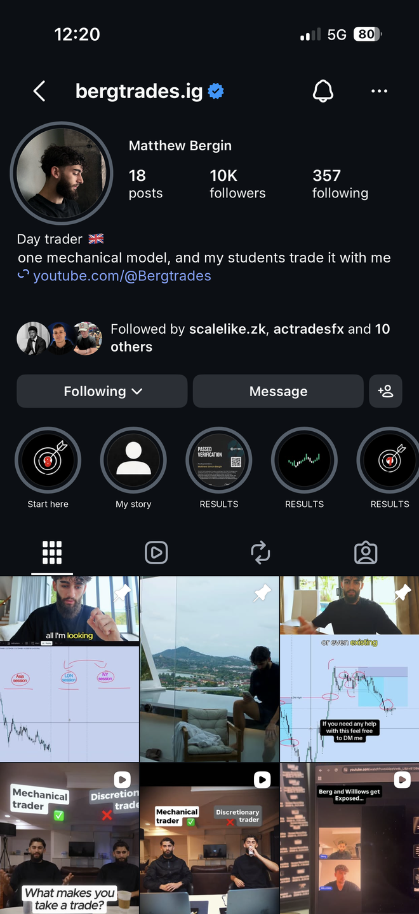

814views
built for matthew bergin
you've got 58 five star reviews and a guy who went from an $81 payout to over a million in funding. the people who actually reach you buy, and then they say so in public.
so the offer's fine. it's just that not many make it that far, and most of that is upstream stuff you can move in an afternoon.

2. your bio and highlights
what's in this for me, is this guy legit, where do i go next. right now the first answer is a job title anyone could claim, and the next step points at a second account rather than your stuff.
the line you already have is better than any of that. your students take the same trades you do. nobody running a discretionary model can say it.
highlights are similar. there's seven, and someone new won't know which to tap, so they tend to tap none. start here would catch whoever landed twenty seconds ago. my story is the one that makes them stay. after that it's all results, and it reads stronger as a wall of them than as four folders with numbers.
current

one option

4. what packaging actually does
three videos repackaged. 814, 737 and 314 views on a channel averaging around 125. two of them are still that channel's best a year later. nothing changed about the trading.


your own numbers point the same way. week 1 of road to $2m had marker on a whiteboard and real certs with your name on them, did 1.2k. the last two weeks did 62, 181, 373 and 107.
close
we've fixed this for creators in trading and well outside it. usually the same story, the proof already exists and it's filed somewhere nobody looks.

you'd get your own dashboard and portal built around where your funnel actually leaks, tracking a new viewer through to a paying client.
the vsl for that page is already written, in your voice, off your students and your own drawdown. it's done, not an offer to do it.
I WANT THIS IMPLEMENTED